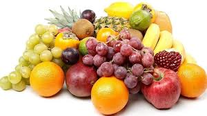
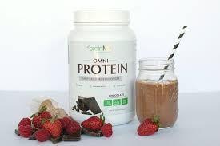

Alle bilder og oppskifter er hentet fra Matprat.no og Matportalen.no
Tips og Triks
KostRåd
Det du spiser og drikker påvirker helsen din. Helsedirektoratet anbefaler et variert kosthold med mye grønnsaker, frukt, bær, grove kornprodukter og fisk, og begrensede mengder av bearbeidet kjøtt, rødt kjøtt, salt og sukker. Velg gjerne nøkkelhullsmerkede matvarer.

Kosttilskudd
Kosttilskudd kan være en alminnelig vitamin- eller mineralpille, men det kan også være omega-3 kapsler, tran, slanketabletter, antioksidanter eller tabletter med innhold av ekstrakter fra forskjellige planter m.m.

Næringsstoffer
Energi og næringsstoffer er nødvendige for kroppens vekst og utvikling og for å opprettholde kroppens normale funksjoner.